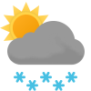

Weather
Germersheim 2.2-6.1
2.2-6.1

2.8-6.8 Sat

-0.2-7.5 Sun

-0.3-6.2 Mon

1.6-3.9 Tue

6.5-9.0 Wed

2.9-8.3 Thu

5.8-9.5 Fri

3.6-6.6 Sat

1.9-6.1 Sun
Erlabrunn -2.4-0.1
-2.4-0.1

-2.0-4.0 Sat

-2.0-2.5 Sun

-2.4-0.6 Mon

-2.8--1.0 Tue

-0.3-1.8 Wed

-0.8-2.0 Thu

2.2-2.9 Fri

0.2-2.3 Sat

0.1-2.0 Sun
Schmilka 1.1-4.2
1.1-4.2

1.5-8.0 Sat

1.9-5.2 Sun

1.2-3.3 Mon

-0.2-2.3 Tue

2.4-4.1 Wed

0.9-4.9 Thu

3.1-5.8 Fri

3.4-7.4 Sat

1.2-5.2 Sun